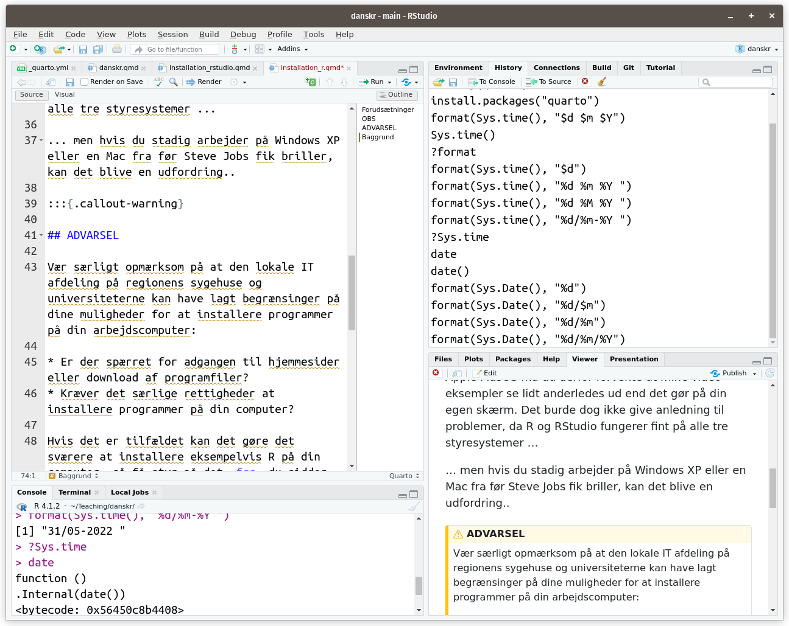

my_new_data <- read.csv("data_folder/my_data_file.csv")
my_new_data <- my_new_data %>%
select(-cpr_nummer)
number_of_observations <- my_new_data %>% nrow()
my_fancy_plot <- my_new_data %>% ggplot() + geom_histogram()What are we installing?
What is R in relation to RStudio and the R ecosystem?
1 R here, there and everywhere
1.1 What is R?
R itself is a coding language and development environment which is particularly well suited for statistical analyses and data science.
R code might for example look like this:
In other words, R is the code you use to read data, clean and wrangle data, define analyses, generate plots and tables, etc.
1.2 What is RStudio?
RStudio, on the other hand, is ‘just’ a graphical user interface which makes it easier to work in R. It is, in fact, perfectly possible to do without RStudio, but there are good reasons why most R users use it.
RStudio might for instance look like this:

1.3 What is the R ecosystem?
The R ecosystem, is a veritable plethora of extra functionality that can be added on to of R itself. This is first and foremost in the form of R packages, of which there are many thousands, but it also includes online guides, youTube videos, chat-forums, etc. No matter what problems you encounter on your R journey, you can be almost 100% certain that some has found a solution already … it is already prepared for you, out there in the R ecosystem.
But before we get started with all of that, we have to install R.